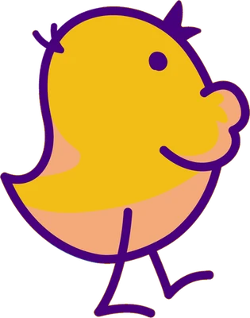
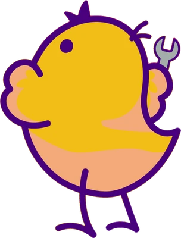

一次聚会的流程
每周六 20:00 · 顺序仅供参考每一场都有一位读书分享人和一位论文分享人。学习组长会根据当天的内容量调整时间分配。
问候 · 公告
简单回顾上周遗留的问题，确认今天的顺序。
梳理本周章节
分享人用自己的话讲解本周章节的核心观点、图表和计算。
一篇论文
问题、思路、实验，以及它和本周教材的衔接点。
提问与讨论
从分享人准备的问题开始，大家交流各自的实战经验。
下周预告
确认下周的范围和分享人，有空位就当场定下来。
分享准备清单
勾选只保存在本设备
读书分享
论文分享分享准备助手提示词
粘贴给 AI 助手，用来搭建分享的框架。摘要只是起点，请务必和原文核对。
空缺的分享席位
OPEN SEATS剩余场次中还没有分享人的席位。
报名方法
- 从上面的黄色席位中，选出想负责的场次和类型（读书或论文）。
- 在学习时间表（Google 表格）中该场次的 발제자（分享人）一栏，按
책 : 이름, 논문: 이름的格式填写。表格是韩文的：책 = 读书，논문 = 论文，이름 = 你的名字。例如：책 : Hong Gildong, 논문: Kim Byeong-a - 完成！刷新这个看板，黄色席位就会变成你的名字。
如果无法编辑表格，请在 Discord 或聚会时告诉学习组长。
哪个席位适合我？
读书分享推荐给第一次分享的人。教材写得很友好，跟着范围走就能搭出结构。
论文分享适合在工作中接触过相关主题、或想深入研究的人。其中也有 2017 年的 Transformer、2008 年的 Roofline 这样的经典论文，负担相对小一些。
一起遵守的约定
只有四条提前阅读
即使不是分享人，先把本周范围浏览一遍，讨论会丰富得多。
不懂就问
“这是什么意思？”是最好的问题。小鸡本来就什么都是第一次。
注明出处
请写明讲义中图、表、数字的出处。教材标注页码或章节号即可。
来不了请提前说
轮到你分享的那周如果有事，请提前告知，换个席位就好。
常见问题
FAQ教材在哪里获取？
可以在出版社网站（baseten.co/inference-engineering）免费下载 PDF，也可以阅读在线版。纸质书另行销售。
没有 GPU 可以参加吗？
可以。这个学习会以读懂教材为主。如果想亲手跑一跑，可以参考 Apple 芯片 Mac 的 MLX 视频（补充视频），或用免费的云端笔记本从小模型开始。
中途可以加入吗？
可以。每一场的主题相对独立，只要在主题导览里浏览一下第 1 场（第 0～1 章）的基本术语，就能跟上。
在哪里聚会？
所有聚会都在 Zoom 上进行。会议 ID 884 5916 2312，密码 11111。参会链接和复制按钮在简报页的参加方式里。
时间变动的话在哪里看？
时间目前还是暂定。表格中的日期一改，这个看板的倒计时、日程表和公告条都会自动跟着更新。
特别场（嘉宾讲座）什么时候举行？
除了 10 场常规场次，还会有邀请嘉宾的特别场 · 嘉宾讲座。日期和嘉宾会在 Discord 上通知。
以前的讲义在哪里看？
按场次收集在 Google 云端硬盘的讲义文件夹里。
一个人可以同时负责读书分享和论文分享吗？
报名人数少的场次可以。不过为了不让任务集中在一个人身上，建议先把空位分一分。
看板是怎么更新的？
自动同步① 修改表格后
- 발제자（分享人）栏 → 场次卡片、下次聚会、空缺席位列表
- 날짜（日期）栏 → 倒计时、顺序、日历链接、公告条
- 如果在表格中新增 시간（时间）、발표자료（讲义）或 비고（备注）列，也会被读取。在 비고 中写
휴강（停课）即可跳过该场次；写停课、skip或cancel也可以。
当前状态：
② 会自动变化的内容
- 聚会时间（周六 20:00 起 2 小时）过后，该场次会标记为已完成，蛋孵化，下次聚会顺延到下一场。
- 已过去场次的空缺席位会从列表中移除。
- 在表格中新增 완료（完成）列并填写
O，即使时间未到也会标记为已完成。
表格必须设置为“知道链接的任何人：查看者”。如果读取不到表格，会显示预先设置的默认内容。
③ 检查分享人栏格式
输入你要填进表格的内容，看看看板会怎么解读。